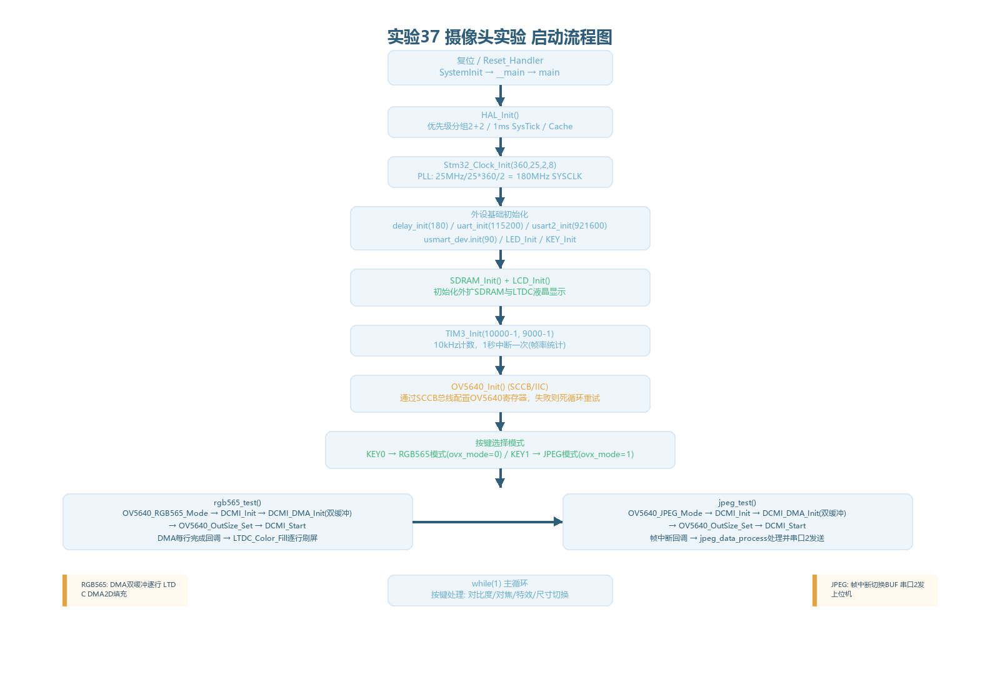
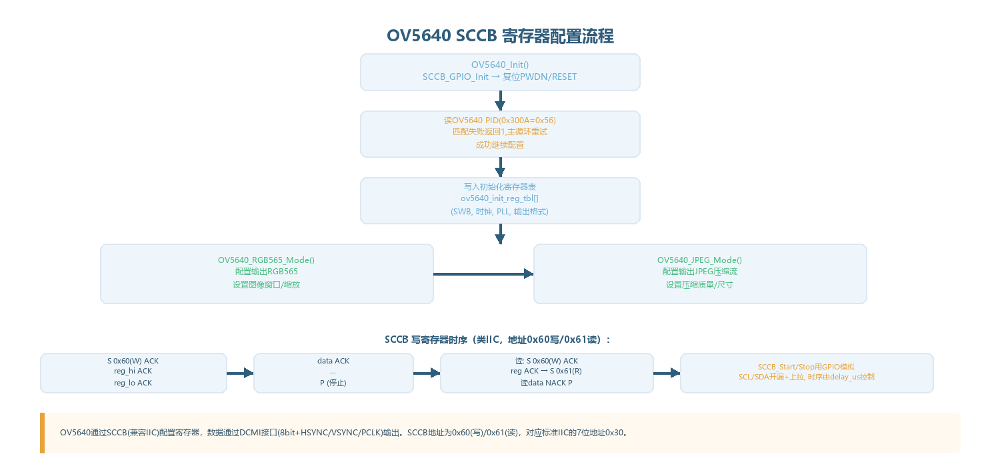
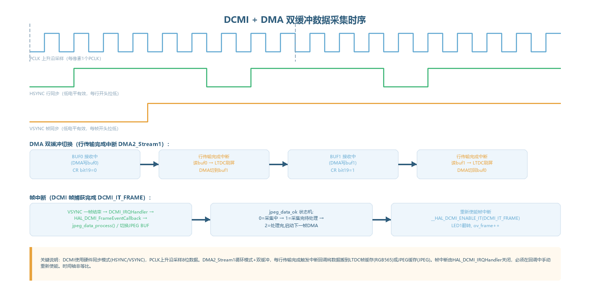
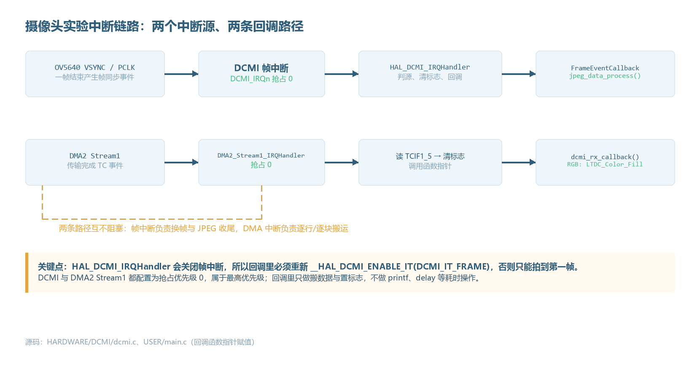
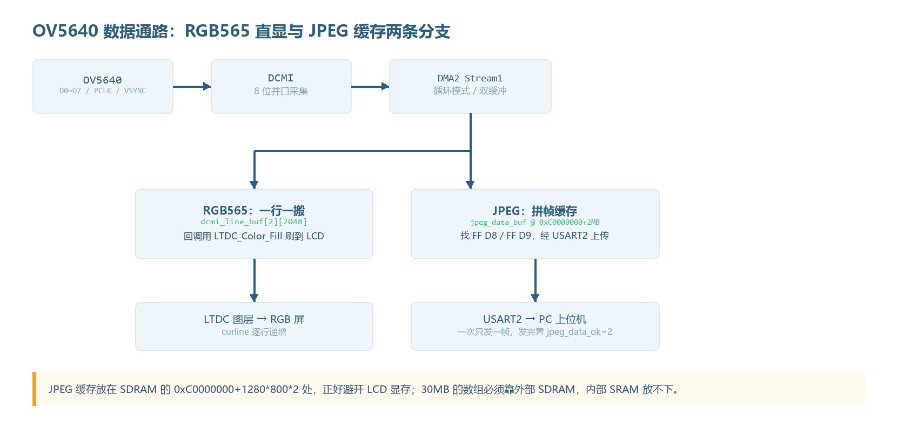

01 实验目标与硬件资源
用 DCMI 接收 OV5640 的 8 位并口数据，RGB565 直接刷屏，JPEG 经串口 2 上传
本实验把 OV5640 摄像头模组接在 STM32F429 的 DCMI 接口上：上电后先用 SCCB（类 IIC）读芯片 ID、写寄存器表，把模组配置成 RGB565 或 JPEG 输出；再让 DCMI 以 8 位并口采集，DMA2 Stream1 采用双缓冲把数据搬走。RGB565 模式下一行一行刷到 LTDC 图层，JPEG 模式下一帧一帧拼进 SDRAM 缓存，再通过 USART2（921600）发给上位机。与实验 38 内存管理实验相比，本实验的难点在“引脚复用 + DMA 双缓冲 + 两级中断”而不是算法。
| 资源 | 引脚 / 参数 | 说明 |
|---|---|---|
| DCMI_D0~D7 | PC6、PC7、PC8、PC9、PC11、PB8、PB9、PD3 | 8 位并行数据，AF13 |
| DCMI_PCLK | PA6 | 像素时钟，上升沿采样 |
| DCMI_HSYNC / VSYNC | PB7 / PH8 | 行同步 / 场同步，低电平有效 |
| SCCB_SCL / SDA | PB3 / PB4 | 普通推挽 GPIO 模拟时序 |
| DMA2 Stream1 | Channel 1，循环模式，高优先级 | DCMI→内存，双缓冲 |
| JPEG 缓存 | 0xC0000000+1280*800*2，30MB | 放在 LCD 显存之后的 SDRAM |
| 调试串口 | USART1 115200 / USART2 921600 | 日志输出 / JPEG 上传 |
| 帧率统计 | TIM3，10kHz 计数，1 秒中断 | TIM3_Init(10000-1,9000-1) |
DCMI 8 位并口
SCCB 配置
DMA 双缓冲
RGB565 / JPEG
USART2 921600
OV5640 的 PCLK 最高可达 84MHz，而 DCMI 要求 PCLK 不超过 HCLK 的一半。本工程 HCLK=180MHz，所以模组初始化表里把 PCLK 分频设置在安全范围内，改寄存器表时不能随意提高。
02 目录与文件分工
摄像头实验的文件比前几个实验多，先分清“谁配置谁”
| 文件 | 职责 | 本页关注点 |
|---|---|---|
USER/main.c | 入口、模式选择、两种业务循环 | jpeg_test() / rgb565_test() |
CORE/startup_stm32f429xx.s | 向量表、栈堆、复位入口 | 初始 MSP、Reset_Handler |
USER/system_stm32f4xx.c | SystemInit | FPU、VTOR |
SYSTEM/sys/sys.c | Stm32_Clock_Init | 180MHz 时钟树 |
SYSTEM/delay/delay.c | SysTick 轮询延时 | fac_us |
SYSTEM/usart/usart.c | USART1 与 printf | fputc |
HARDWARE/OV5640/sccb.c | GPIO 模拟 SCCB 时序 | SCCB_WR_Byte |
HARDWARE/OV5640/ov5640.c | 寄存器表、模式切换、对焦 | OV5640_Init / OutSize_Set |
HARDWARE/DCMI/dcmi.c | DCMI 与 DMA 配置、中断 | 本页核心：DCMI_DMA_Init |
HARDWARE/LCD/ltdc.c | LTDC 图层与显存 | LTDC_Color_Fill |
HARDWARE/SDRAM/sdram.c | FMC 驱动 SDRAM | 显存与 JPEG 缓存的物理基础 |
HARDWARE/TIMER/timer.c | TIM3 帧率统计 | 1 秒中断打印帧率 |
HARDWARE/USART2/usart2.c | USART2 只发模式 | JPEG 上传通道 |
调用关系：
main → OV5640_Init → SCCB_Init/SCCB_WR_Reg，main → DCMI_Init → HAL_DCMI_Init → HAL_DCMI_MspInit。读代码时不要被 HAL 的回调层绕晕，按这三条链分别看即可。03 启动流程总览
从复位到选择工作模式，顺序里藏着两条硬依赖

int main(void)
{
u8 key;
u8 t;
HAL_Init(); // HAL 时基 + NVIC 分组
Stm32_Clock_Init(360,25,2,8); // HSE 25M → SYSCLK 180MHz
delay_init(180); // SysTick 延时倍乘数
uart_init(115200); // USART1，打印日志
usart2_init(921600); // USART2，只发，用于传 JPEG
usmart_dev.init(90); // 串口在线调试
LED_Init(); // 指示灯
KEY_Init(); // 四个按键
SDRAM_Init(); // 必须先有 SDRAM，LCD 显存才能用
LCD_Init(); // LTDC + 面板初始化
TIM3_Init(10000-1,9000-1); // 10kHz 计数，1 秒溢出一次
POINT_COLOR=RED;
LCD_ShowString(30,50,200,16,16,"Apollo STM32F4/F7");
LCD_ShowString(30,70,200,16,16,"OV5640 TEST");
LCD_ShowString(30,90,200,16,16,"ATOM@ALIENTEK");
LCD_ShowString(30,110,200,16,16,"2016/1/16");
while(OV5640_Init()) // 读 ID 失败就闪屏重试
{
LCD_ShowString(30,130,240,16,16,"OV5640 ERR");
delay_ms(200);
LCD_Fill(30,130,239,170,WHITE);
delay_ms(200);
LED0=!LED0;
}
LCD_ShowString(30,130,200,16,16,"OV5640 OK");
while(1) // 等待用户选择模式
{
key=KEY_Scan(0);
if(key==KEY0_PRES){ovx_mode=0;break;} // RGB565
else if(key==KEY1_PRES){ovx_mode=1;break;} // JPEG
t++;
if(t==100)LCD_ShowString(30,150,230,16,16,"KEY0:RGB565 KEY1:JPEG");
if(t==200) // 闪烁提示
{
LCD_Fill(30,150,210,150+16,WHITE);
t=0;
LED0=!LED0;
}
delay_ms(5);
}
if(ovx_mode==1)jpeg_test(); // 进入对应业务，不再返回
else rgb565_test();
}
关键逻辑说明
- SDRAM 必须先于 LCD：LTDC 的显存地址
0xC0000000位于 SDRAM，FMC 未初始化时写显存会 HardFault；所以顺序固定为SDRAM_Init()→LCD_Init()。 - OV5640 初始化失败不退出：
while(OV5640_Init())会一直重试并闪 LED，方便排查排线松动或供电问题；OV5640_Init()返回 1 表示 ID 不匹配。 - 模式选择放在 while 里：按键扫描每 5ms 一次，选择后
break跳出，再调用对应业务函数；业务函数内部又是死循环，所以不会回到这里。 - USART2 波特率 921600：JPEG 一帧几十 KB，115200 太慢；921600 在 PCLK1=45MHz 下误差仍可接受。
04 启动文件与向量表
DCMI、DMA2、TIM3 的中断入口都从这张表里来
Stack_Size EQU 0x400; // 主栈 1KB AREA STACK, NOINIT, READWRITE, ALIGN=3 Stack_Mem SPACE Stack_Size __initial_sp Heap_Size EQU 0x200; // 堆 512B AREA HEAP, NOINIT, READWRITE, ALIGN=3 __heap_base Heap_Mem SPACE Heap_Size __heap_limit AREA RESET, DATA, READONLY EXPORT __Vectors __Vectors DCD __initial_sp // 初始 MSP DCD Reset_Handler // 复位向量 DCD NMI_Handler DCD HardFault_Handler // ... 省略其他异常 ... DCD DCMI_IRQHandler // 摄像头帧中断入口 DCD DMA2_Stream1_IRQHandler // DCMI 的 DMA 完成中断 DCD TIM3_IRQHandler // 帧率统计 Reset_Handler PROC EXPORT Reset_Handler [WEAK] IMPORT SystemInit IMPORT __main LDR R0, =SystemInit BLX R0 LDR R0, =__main BX R0 ENDP
关键逻辑说明
- 向量表顺序不能改：异常号是芯片固定的，
DCMI_IRQHandler必须放在 DCMI 对应的槽位，写错会导致中断跑到别的函数。 - 弱符号覆盖：启动文件里的
DCMI_IRQHandler是[WEAK]定义，dcmi.c里写了同名函数就自动覆盖，不需要改启动文件。 - 1KB 栈是否够用：本实验中断回调里没有大数组，
dcmi_line_buf是全局变量；如果以后在回调里定义大局部数组，必须加大Stack_Size。
05 SystemInit 与 HAL_Init
FPU、向量表、优先级分组与时基
void SystemInit(void)
{
#if (__FPU_PRESENT == 1) && (__FPU_USED == 1)
SCB->CPACR |= ((3UL << 10*2)|(3UL << 11*2)); // 开 FPU（CP10/CP11）
#endif
RCC->CR |= (uint32_t)0x00000001; // HSION
RCC->CFGR = 0x00000000; // 时钟配置复位
// ... 省略 PLL/HSE/CSS 复位 ...
SCB->VTOR = FLASH_BASE | VECT_TAB_OFFSET; // 向量表在 0x08000000
}
HAL_StatusTypeDef HAL_Init(void)
{
HAL_NVIC_SetPriorityGrouping(NVIC_PRIORITYGROUP_4); // 4 位抢占
HAL_InitTick(TICK_INT_PRIORITY); // 1ms SysTick
return HAL_OK;
}
关键逻辑说明
- FPU 与 DCMI 无关但必须开：HAL 的
HAL_RCC_GetSysClockFreq()等函数内部可能使用浮点，未开 FPU 会进 UsageFault。 - 优先级分组的影响：
NVIC_PRIORITYGROUP_4下HAL_NVIC_SetPriority(DCMI_IRQn,0,0)的第二个 0 才是有效抢占优先级，第三个 0 被忽略；改成 Group 2 时两者都有效。 - HAL 时基与 delay 并存：SysTick 既产生 1ms 中断给 HAL，也被
delay_us轮询读取计数值，两者互不冲突，但HAL_Delay在中断里调用会死等。
06 时钟树与 SysTick 时基
DCMI 的 PCLK 采样、TIM3 的 1 秒统计都建立在这套时钟上
| 项目 | 算式 | 结果 |
|---|---|---|
| PLL 输入 | HSE 25MHz / PLLM 25 | 1MHz |
| VCO | 1MHz × PLLN 360 | 360MHz |
| SYSCLK | 360MHz / PLLP 2 | 180MHz |
| HCLK | SYSCLK / 1 | 180MHz |
| PCLK1 | 180MHz / 4 | 45MHz |
| PCLK2 | 180MHz / 2 | 90MHz |
| DCMI 时钟 | PCLK2 90MHz（AF13） | 需 ≤ HCLK/2 |
| TIM3 计数 | 90MHz / 9000 = 10kHz，计 10000 次 | 1 秒中断 |
void TIM3_Init(u16 arr,u16 psc)
{
TIM3_Handler.Instance=TIM3;
TIM3_Handler.Init.Prescaler=psc; // 9000-1 → 10kHz
TIM3_Handler.Init.CounterMode=TIM_COUNTERMODE_UP;
TIM3_Handler.Init.Period=arr; // 10000-1 → 1s
TIM3_Handler.Init.ClockDivision=TIM_CLOCKDIVISION_DIV1;
HAL_TIM_Base_Init(&TIM3_Handler);
HAL_TIM_Base_Start_IT(&TIM3_Handler); // 开更新中断
}
void HAL_TIM_PeriodElapsedCallback(TIM_HandleTypeDef *htim)
{
if(htim==(&TIM3_Handler))
{
printf("frame:%d\r\n",ov_frame); // 1 秒打印一次帧率
printf("jpeg_data_len:%d\r\n",jpeg_data_len);
ov_frame=0; // 计数清零
}
}
关键逻辑说明
- TIM3 挂在 APB1：APB1 分频系数为 4（≠1），定时器时钟自动 ×2，即 90MHz；
9000-1分频后正好 10kHz。 - RGB 模式下关闭 TIM3：
rgb565_test()里执行TIM3->CR1&=~(0x01)，因为每秒 printf 会打断 LTDC 刷屏造成抖动；JPEG 模式则保留统计。 - 帧率变量 ov_frame：在 DCMI 帧回调里自增，在 TIM3 回调里读取并清零，两个都是中断，读写顺序天然互斥（同为抢占优先级 0 不会嵌套）。
07 SCCB 与 OV5640 初始化
用两个普通 GPIO 模拟 SCCB，先把芯片 ID 读出来

void SCCB_Init(void)
{
GPIO_InitTypeDef GPIO_Initure;
__HAL_RCC_GPIOB_CLK_ENABLE(); // SCCB 用 PB3/PB4
GPIO_Initure.Pin=GPIO_PIN_3|GPIO_PIN_4;
GPIO_Initure.Mode=GPIO_MODE_OUTPUT_PP; // 推挽输出，软件翻转
GPIO_Initure.Pull=GPIO_PULLUP; // 上拉，空闲为高
GPIO_Initure.Speed=GPIO_SPEED_FAST;
HAL_GPIO_Init(GPIOB,&GPIO_Initure);
}
u8 SCCB_WR_Byte(u8 dat)
{
u8 j,res;
for(j=0;j<8;j++) // 高位先发
{
if(dat&0x80)SCCB_SDA=1;
else SCCB_SDA=0;
dat<<=1;
SCCB_Delay();
SCCB_SCL=1; // SCL 高电平期间 SDA 稳定
SCCB_Delay();
SCCB_SCL=0;
}
// ... 省略第 9 位 ACK 读取 ...
return res;
}
关键逻辑说明
- SCCB 不是标准 IIC：它没有重复起始位，第 9 位是“自由位”而不是 ACK；所以工程没有用硬件 I2C 外设，而是直接翻转 GPIO。
- SCL 高电平采样：数据必须在 SCL 拉高之前准备好，
SCCB_Delay()保证建立/保持时间，删掉延时会读错寄存器。 - ID 校验：
OV5640_Init()先读0x300A/0x300B得到 0x5640，不匹配直接返回 1，避免后面写一堆寄存器却不知道模组根本没接上。 - 写寄存器表：
ov5640_uxga_init_reg_tbl是二维数组，sizeof(...)/4是因为每个元素 2 字节、外层再除 2，循环逐条写入。
08 DCMI 接口与 DMA 双缓冲
8 位并口怎么采、DMA 怎么在“搬 buf0”时“填 buf1”

void DCMI_Init(void)
{
DCMI_Handler.Instance=DCMI;
DCMI_Handler.Init.SynchroMode=DCMI_SYNCHRO_HARDWARE; // 硬件 HSYNC/VSYNC
DCMI_Handler.Init.PCKPolarity=DCMI_PCKPOLARITY_RISING; // PCLK 上升沿采样
DCMI_Handler.Init.VSPolarity=DCMI_VSPOLARITY_LOW; // VSYNC 低有效
DCMI_Handler.Init.HSPolarity=DCMI_HSPOLARITY_LOW; // HSYNC 低有效
DCMI_Handler.Init.CaptureRate=DCMI_CR_ALL_FRAME; // 全帧捕获
DCMI_Handler.Init.ExtendedDataMode=DCMI_EXTEND_DATA_8B; // 8 位数据
HAL_DCMI_Init(&DCMI_Handler); // 内部会开帧中断
}
void DCMI_DMA_Init(u32 mem0addr,u32 mem1addr,u16 memsize,u32 memblen,u32 meminc)
{
__HAL_RCC_DMA2_CLK_ENABLE();
__HAL_LINKDMA(&DCMI_Handler,DMA_Handle,DMADMCI_Handler); // 句柄互链
DMADMCI_Handler.Instance=DMA2_Stream1;
DMADMCI_Handler.Init.Channel=DMA_CHANNEL_1;
DMADMCI_Handler.Init.Direction=DMA_PERIPH_TO_MEMORY;
DMADMCI_Handler.Init.PeriphInc=DMA_PINC_DISABLE; // 外设地址固定
DMADMCI_Handler.Init.MemInc=meminc; // 内存递增
DMADMCI_Handler.Init.PeriphDataAlignment=DMA_PDATAALIGN_WORD;
DMADMCI_Handler.Init.MemDataAlignment=memblen;
DMADMCI_Handler.Init.Mode=DMA_CIRCULAR; // 循环模式
DMADMCI_Handler.Init.Priority=DMA_PRIORITY_HIGH;
DMADMCI_Handler.Init.FIFOMode=DMA_FIFOMODE_ENABLE;
DMADMCI_Handler.Init.FIFOThreshold=DMA_FIFO_THRESHOLD_HALFFULL;
DMADMCI_Handler.Init.MemBurst=DMA_MBURST_SINGLE;
DMADMCI_Handler.Init.PeriphBurst=DMA_PBURST_SINGLE;
HAL_DMA_DeInit(&DMADMCI_Handler);
HAL_DMA_Init(&DMADMCI_Handler);
__HAL_UNLOCK(&DMADMCI_Handler); // 关键：先解锁
if(mem1addr==0) // 单缓冲
HAL_DMA_Start(&DMADMCI_Handler,(u32)&DCMI->DR,mem0addr,memsize);
else // 双缓冲
{
HAL_DMAEx_MultiBufferStart(&DMADMCI_Handler,(u32)&DCMI->DR,mem0addr,mem1addr,memsize);
__HAL_DMA_ENABLE_IT(&DMADMCI_Handler,DMA_IT_TC);
HAL_NVIC_SetPriority(DMA2_Stream1_IRQn,0,0);
HAL_NVIC_EnableIRQ(DMA2_Stream1_IRQn);
}
}
关键逻辑说明
- 为什么必须
__HAL_UNLOCK：HAL_DMA_Start/MultiBufferStart入口会先__HAL_LOCK，若句柄仍处于锁定态（例如上一次HAL_DMA_DeInit后），函数直接返回 HAL_BUSY，DMA 根本没启动。源码注释专门写了这一点。 - 外设数据宽度 32 位：DCMI 每次读取
DCMI->DR都按字访问，虽然只有低 8 位有效，但这是 DCMI 的硬件要求。 - 双缓冲的意义：DMA 填 buf1 时 CPU 可以处理 buf0，避免“搬一半被覆盖”；F429 的 DMA 通过
CR的 CT 位（bit19）指示当前目标缓冲。 - 循环模式 + 传输完成中断：每搬完
memsize个数据触发一次 TC，回调里切换处理对象；这也是 RGB 模式“一行一次中断”的来源。
09 中断链路
DCMI 帧中断与 DMA 完成中断，两条链路各管一段

| 触发源 | 控制器 / 标志 | NVIC | ISR | 用户回调 |
|---|---|---|---|---|
| 一帧采集结束（VSYNC 事件） | DCMI_SR 的 FNE/VSYNC | DCMI_IRQn，抢占 0 | DCMI_IRQHandler | HAL_DCMI_FrameEventCallback |
| DMA 搬运完设定长度 | DMA2 LISR 的 TCIF1_5 | DMA2_Stream1_IRQn，抢占 0 | DMA2_Stream1_IRQHandler | dcmi_rx_callback 函数指针 |
| TIM3 计数溢出 | TIM3_SR 的 UIF | TIM3_IRQn，抢占 1 | TIM3_IRQHandler | HAL_TIM_PeriodElapsedCallback |
void DCMI_IRQHandler(void)
{
HAL_DCMI_IRQHandler(&DCMI_Handler); // 统一入口，内部判源
}
void HAL_DCMI_FrameEventCallback(DCMI_HandleTypeDef *hdcmi)
{
jpeg_data_process(); // 换缓冲 / 收尾
LED1=!LED1; // 帧指示
ov_frame++; // 帧率计数
__HAL_DCMI_ENABLE_IT(&DCMI_Handler,DCMI_IT_FRAME); // 必须重新使能
}
void DMA2_Stream1_IRQHandler(void)
{
if(__HAL_DMA_GET_FLAG(&DMADMCI_Handler,DMA_FLAG_TCIF1_5)!=RESET)
{
__HAL_DMA_CLEAR_FLAG(&DMADMCI_Handler,DMA_FLAG_TCIF1_5); // 清标志
dcmi_rx_callback(); // 函数指针调用
}
}
关键逻辑说明
- 帧中断会被 HAL 关闭：
HAL_DCMI_IRQHandler()处理完帧事件后会关闭DCMI_IT_FRAME，如果回调里不再使能，就只能采到第一帧——这是本实验最经典的“只显示一帧”问题。 - 回调用函数指针：
dcmi_rx_callback在jpeg_test()里指向jpeg_dcmi_rx_callback，在rgb565_test()里指向rgblcd_dcmi_rx_callback，同一套 DMA 中断服务两种业务。 - 清标志必须在回调前：先清 TC 标志再处理数据，否则处理期间若又完成一次传输，标志会丢失。
- 中断里不做耗时操作：两个回调都只做内存拷贝/置标志，
printf、delay全部放到主循环，否则 PCLK 数据会溢出。
10 RGB565 显示通路
一行一搬，直接刷进 LTDC 图层

void DCMI_Start(void)
{
LCD_SetCursor(0,0);
LCD_WriteRAM_Prepare(); // 准备写 GRAM
__HAL_DMA_ENABLE(&DMADMCI_Handler); // 先开 DMA
DCMI->CR|=DCMI_CR_CAPTURE; // 再开采集，避免丢首行
}
void rgblcd_dcmi_rx_callback(void)
{
u16 *pbuf;
if(DMADMCI_Handler.Instance->CR&(1<<19)) // CT=1：DMA 正在用 buf1
pbuf=(u16*)dcmi_line_buf[0]; // 处理 buf0
else
pbuf=(u16*)dcmi_line_buf[1];
LTDC_Color_Fill(0,curline,lcddev.width-1,curline,pbuf); // DM2D 刷一行
if(curline<lcddev.height)curline++; // 行号递增
}
void DCMI_Stop(void)
{
DCMI->CR&=~(DCMI_CR_CAPTURE); // 关采集
while(DCMI->CR&0X01); // 等待当前帧结束
__HAL_DMA_DISABLE(&DMADMCI_Handler); // 再关 DMA
}
关键逻辑说明
- 启动顺序：先使能 DMA 再置
DCMI_CR_CAPTURE，否则 DCMI 已经开始输出而 DMA 还没准备好，第一行会丢。 - CT 位判断：DMA 双缓冲的当前目标缓冲由
CRbit19 指示，回调里读它就知道“哪个 buf 已满、该读哪个”。 - 行号 curline：从
yoffset开始（LCD 高度大于 800 时居中显示），每处理一行加 1，超过屏幕高度后不再增加，画面保持静止。 - 停止顺序：先关捕获并等待
CR的 CAPTURE 位自动清零，再关 DMA；反过来会残留半行数据。
11 JPEG 采集与串口上传
拼接多块行缓存，找 FF D8 / FF D9 得到完整 JPEG
void jpeg_dcmi_rx_callback(void)
{
u16 i;
u32 *pbuf;
pbuf=jpeg_data_buf+jpeg_data_len; // 追加到有效数据末尾
if(DMADMCI_Handler.Instance->CR&(1<<19)) // buf0 已满
{
for(i=0;i<jpeg_line_size;i++)pbuf[i]=dcmi_line_buf[0][i];
jpeg_data_len+=jpeg_line_size;
}
else
{
for(i=0;i<jpeg_line_size;i++)pbuf[i]=dcmi_line_buf[1][i];
jpeg_data_len+=jpeg_line_size;
}
}
void jpeg_data_process(void)
{
u16 i,rlen;
u32 *pbuf;
curline=yoffset;
if(ovx_mode&0X01) // 仅 JPEG 模式处理
{
if(jpeg_data_ok==0) // 本帧还没收完
{
__HAL_DMA_DISABLE(&DMADMCI_Handler);
rlen=jpeg_line_size-__HAL_DMA_GET_COUNTER(&DMADMCI_Handler); // 剩余长度
pbuf=jpeg_data_buf+jpeg_data_len;
if(DMADMCI_Handler.Instance->CR&(1<<19))
for(i=0;i<rlen;i++)pbuf[i]=dcmi_line_buf[1][i];
else
for(i=0;i<rlen;i++)pbuf[i]=dcmi_line_buf[0][i];
jpeg_data_len+=rlen;
jpeg_data_ok=1; // 通知主循环
}
if(jpeg_data_ok==2) // 上一帧已发完
{
__HAL_DMA_SET_COUNTER(&DMADMCI_Handler,jpeg_line_size);
__HAL_DMA_ENABLE(&DMADMCI_Handler);
jpeg_data_ok=0;
jpeg_data_len=0;
}
}
else
{
LCD_SetCursor(0,0);
LCD_WriteRAM_Prepare();
}
}
关键逻辑说明
- 为什么要补“剩余长度”：VSYNC 到来时 DMA 可能只填了半块缓存，
__HAL_DMA_GET_COUNTER读出还没搬的数量，才能把这一帧尾部完整拼上。 - 三态标志 jpeg_data_ok：0=正在收，1=收完待发，2=发完可重开；主循环只处理 1，处理完置 2，帧中断看到 2 才重启 DMA，避免“边发边覆盖”。
- 缓存地址：
jpeg_data_buf位于 SDRAM 的0xC0000000+1280*800*2，即 LCD 显存之后；30MB 容量只能放外部 SDRAM。 - JPEG 头尾查找：主循环遍历缓存找
0xFFD8（SOI）与0xFFD9（EOI），两者之间才是有效图像，长度jpglen=i-jpgstart+2。
12 主循环与现象
两个业务循环各自的按键分支与可观察结果
while(1) // jpeg_test() 主循环 { if(jpeg_data_ok==1) // 收到一整帧 { p=(u8*)jpeg_data_buf; printf("jpeg_data_len:%d\r\n",jpeg_data_len*4); // ... 查找 FF D8 / FF D9 ... if(jpglen) { p+=jpgstart; for(i=0;i<jpglen;i++) // 逐字节发到 USART2 { USART2->DR=p[i]; while((USART2->SR&0X40)==0); // 等 TXE key=KEY_Scan(0); if(key)break; // 按键可中断发送 } } // ... 按键处理：对比度 / 对焦 / 特效 / 尺寸 ... jpeg_data_ok=2; // 允许下一帧 } } while(1) // rgb565_test() 主循环 { key=KEY_Scan(0); if(key) { if(key!=KEY1_PRES)DCMI_Stop(); // 除对焦外先停采集 switch(key) { case KEY0_PRES: OV5640_Contrast(++contrast%7); break; case KEY1_PRES: OV5640_Focus_Single(); break; case KEY2_PRES: OV5640_Special_Effects(++effect%7); break; case WKUP_PRES: // 1:1 与缩放切换 scale=!scale; if(scale==0) { fac=800/outputheight; OV5640_OutSize_Set((1280-fac*lcddev.width)/2, (800-fac*outputheight)/2, lcddev.width,outputheight); } else OV5640_OutSize_Set(4,0,lcddev.width,outputheight); break; } if(key!=KEY1_PRES) { LCD_ShowString(30,50,210,16,16,msgbuf); delay_ms(800); DCMI_Start(); // 重新开采集 } } delay_ms(10); }
| 操作 | 可观察现象 |
|---|---|
上电，串口 1 输出 frame:x | 每秒打印一次帧率，LED1 随帧闪烁 |
| KEY0 选择 RGB565 | LCD 实时显示摄像头画面 |
| KEY1 选择 JPEG | LCD 提示 Sending，上位机收到一张 JPEG |
| RGB 模式按 KEY0 | 对比度变化，字符串显示 Contrast:±n |
| RGB 模式按 WKUP | Full Size 1:1 与 Scale 之间切换 |
| JPEG 模式发送中按任意键 | 立即停止发送，回到参数调整 |
关键逻辑说明
- 按键可打断发送：JPEG 发送循环里每发一个字节扫一次按键，保证大图传输时仍能响应；代价是发送速度略降。
- 除 KEY1 外都要停采集：改对比度/特效/尺寸前先
DCMI_Stop()，改完再DCMI_Start()，否则寄存器在采集过程中被改会导致画面撕裂。 - 1:1 显示算法：
fac=800/outputheight是缩放因子，偏移量让 800 行的图像居中落在 1280×800 的屏幕上。
13 关键逻辑复盘与排查
摄像头类问题优先查“供电、排线、时钟极性”
| 现象 | 原因 | 排查 |
|---|---|---|
| 屏显 OV5640 ERR | ID 读不到：SCCB 线序/上拉/供电 | 量 PB3/PB4 波形；确认模组 3.3V 与 PWDN/RESET 电平 |
| 只显示第一帧 | 回调里没重新使能帧中断 | 检查 __HAL_DCMI_ENABLE_IT(DCMI_IT_FRAME) |
| 画面花屏/错位 | PCLK/HSYNC/VSYNC 极性错 | 用 USMART 调 DCMI_CR_Set() 逐项试 |
| 画面抖动 | TIM3 printf 打断刷屏 | RGB 模式已关闭 TIM3，确认 CR1 的 CEN 位 |
| JPEG 上传一半截断 | 发送中被覆盖 | jpeg_data_ok 状态机是否按 0→1→2 走 |
| DMA 不搬数据 | 句柄锁定返回 HAL_BUSY | 确认启动前调用过 __HAL_UNLOCK |
| HardFault | JPEG 缓存地址越界/未初始化 SDRAM | 确认 SDRAM_Init() 先执行、容量足够 |
摄像头实验的“花屏”有三分之一是排线接触不良，三分之一是极性配置，剩下才是代码逻辑。先量信号，再改代码。
14 交互演示
按钮分支对应 main 的模式选择与业务按键，仅演示逻辑
OV5640 模式选择与功能按键
当前状态：等待模式选择
演示只反映
main 的分支判断与 DCMI_Stop/Start 的调用顺序，真实画面依赖摄像头与 SDRAM。